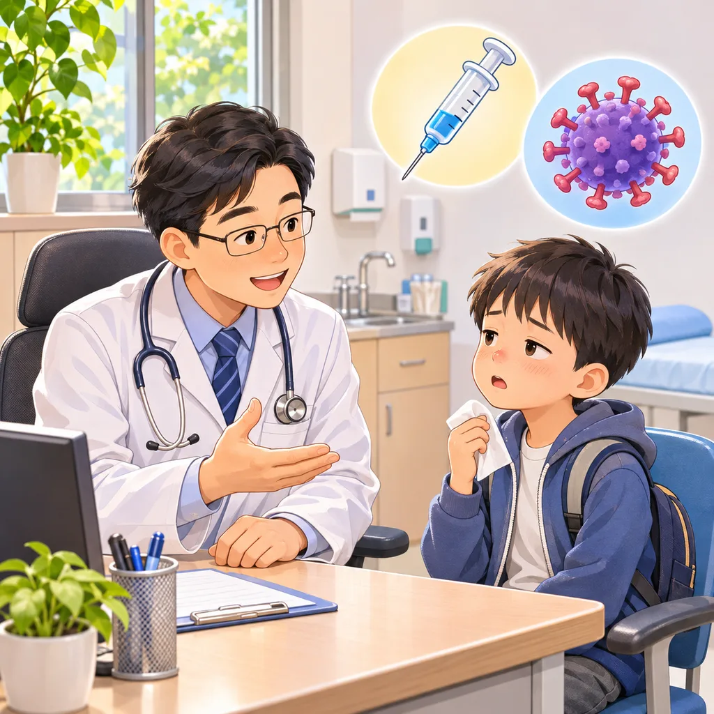

🩺 門診小故事 ｜ 流感疫苗
💉打了流感疫苗，怎麼還是得流感？

🏥有一天，高醫師在診所遇到一位高中生。
🤧他流著鼻水，覺得身體有點沒力氣，雖然沒有發燒，高醫師評估後還是幫他做了流感快篩。
🧪結果竟然是 A 型流感陽性！
🙋家長一聽，很疑惑地問：
「他五天前才剛打流感疫苗，怎麼會得到流感？是不是打疫苗造成的？」
👨⚕️高醫師解釋：
🦠「一般注射型流感疫苗不會讓人感染流感。孩子比較可能是在打疫苗前後，剛好接觸到流感病毒。」
💪「而且，打完疫苗後，大約需要兩週，身體才會建立較完整的保護力。這段期間，還是有可能感染喔！即使超過兩週，也不是百分之百不會感染。」
🛌高醫師接著評估孩子的狀況，給予治療建議，也提醒他多休息、補充水分，留意身體變化。
💚店小二的小提醒
💪打流感疫苗還是有好處的！ 疫苗可以降低得到流感的機會；就算感染，病情也可能比較輕，並降低住院和重症的風險。
有些人打完疫苗後，會有手臂痠痛、疲倦或微燒的情形，通常一兩天就會改善。🚨如果出現呼吸困難、嘴唇腫脹或快昏倒等症狀，請立即就醫或撥打 119。
流感季來臨，記得接種疫苗、勤洗手，一起保護自己和家人的健康喔！😊